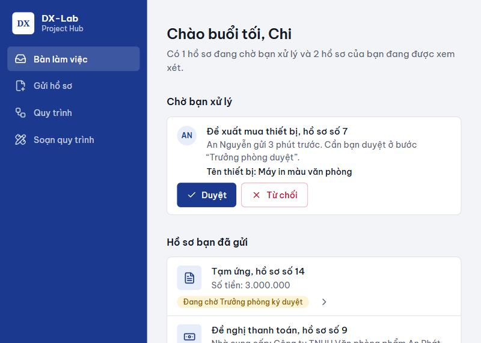
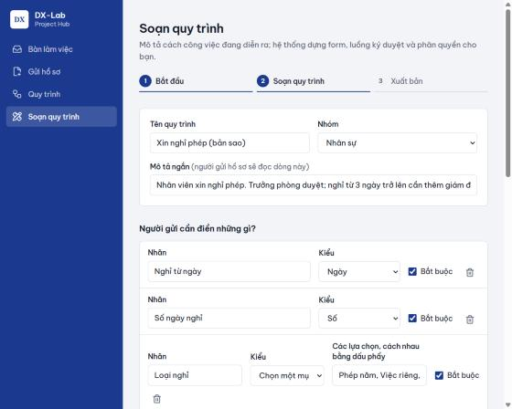
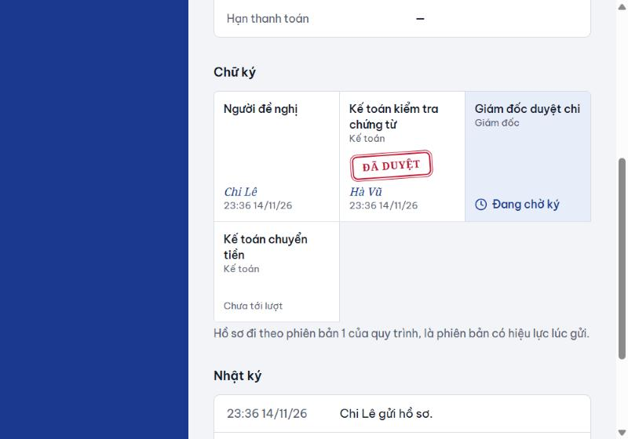
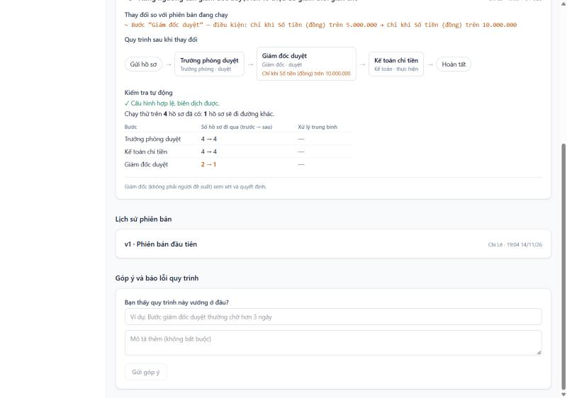

Nói ra quy trình, nhận lại một ứng dụng chạy được.
Quản lý mô tả công việc bằng lời thường. AI soạn, người duyệt, một cú bấm là chạy thật, mỗi phê duyệt có chữ ký số và nhật ký không sửa được.
Mã nguồn mở Apache-2.0 · 9 dịch vụ nguồn mở trong bản lõi · hơn 200 ca kiểm thử chạy trên hệ thống thật

Từ một câu nói đến con dấu
Doanh nghiệp nhỏ bỏ dở chuyển đổi số vì phần mềm có sẵn không khớp cách làm việc, thuê viết riêng thì đắt, và khi quy trình đổi thì không ai biết đã đổi gì.
Mô tả
Gõ cách công việc đang diễn ra, như đang nói với đồng nghiệp.
Nhân viên xin tạm ứng, trưởng phòng duyệt, trên 5 triệu phải thêm giám đốc, kế toán chi tiền.
Soạn và duyệt
AI dựng bản nháp: biểu mẫu, các bước, vai trò. Người quản lý xem sơ đồ, sửa từng ô, rồi gửi duyệt. Người duyệt phải khác người đề xuất.
Xuất bản và vận hành
Một cú bấm biên dịch thành quy trình BPMN chạy trên Flowable, có hộp việc, số liệu điều hành và nhật ký bất biến. Mỗi lần đổi là một phiên bản, chạy thử được trên hồ sơ cũ.
AI thử việc
Ở mỗi bước duyệt có bốn nấc: người làm, chạy bóng, gợi ý, tự làm. Chỉ nâng nấc khi ý kiến của AI khớp quyết định thật đủ nhiều lần.
Mỗi điều nói ở đây đều có ca kiểm thử
Kiểm thử đối chiếu từng điều khoản của đề thi, chạy trên hệ thống thật trong CI cho mỗi pull request.
| Năng lực | Cách làm | Kiểm bởi |
|---|---|---|
| Zero-Trust tại cổng API | Apache APISIX kiểm JWT tại biên, giới hạn tốc độ theo tuyến; không token thì 401 | tang1 hpdi |
| Chữ ký số cho phê duyệt | Chứng thư X.509 do CA riêng của từng tổ chức cấp, chữ ký chỉ thêm, kiểm chứng lại được | pki |
| Kho lạnh bất biến | Hồ sơ đã kết thúc xuống kho S3 dạng JSONL, sổ cái băm nối chuỗi, truy vấn bằng SQL | cold lakehouse |
| Cảm biến thành hồ sơ | Số đo vượt ngưỡng tự mở hồ sơ sửa chữa trong quy trình duyệt; NGSI-LD đọc, bản đồ cảm biến | iot |
| Nhiều tổ chức, một hệ thống | Cách ly bằng org_id trong token, Hasura và PostgreSQL; quản trị người dùng theo tổ chức | tenant upgrade |
| Tìm kiếm có kiểm quyền | Hỏi đáp có dẫn nguồn, đọc PDF và OCR; kết quả vẫn lọc theo quyền thật của người hỏi | search |
| Vận hành tin được | Sao lưu tự động, khôi phục kiểm mã băm, tự phục hồi, TLS, WAF, giám sát | ops restore recovery |
Giao diện của bàn giấy văn phòng
Mực xanh để ký, con dấu đỏ để xác nhận. Khung và nút là thứ ai cũng quen; điểm nhấn riêng là hàng ô ký có đóng dấu.





Lõi chạy ngầm, một cổng duy nhất
Ứng dụng web chỉ nói chuyện với lõi qua cổng API, kiểm token ngay tại biên.
Ứng dụng
- Vue 3 web, tiếng Việt và tiếng Anh
- Thiết bị, cảm biến (token thiết bị)
Cổng
- Apache APISIX kiểm JWT, giới hạn tốc độ
- Keycloak đăng nhập một lần, MFA
Dữ liệu và quy trình
- Hasura API, phân quyền theo dòng
- PostgreSQL
- workflow-bridge biên dịch, chữ ký, kho lạnh
- Flowable BPMN
Tệp
- SeaweedFS kho S3, bắt buộc SigV4
- ClamAV kiểm dịch mã độc
Điều chưa làm, khai báo rõ
Các mục này là todo trong báo cáo kiểm thử, không tô hồng.
- Kho lạnh là JSONL (truy vấn SQL qua DuckDB), chưa phải Parquet hay Iceberg.
- NGSI-LD chỉ đọc; bản đồ cảm biến là SVG, chưa có nền bản đồ.
- Chữ ký số là PKI phần mềm: chưa có HSM, CRL hay OCSP.
- Thời gian thực dùng SSE, thiết bị gọi HTTP; chưa có MQTT hay OPC UA.
- Tìm ngữ nghĩa là tùy chọn, mặc định tắt; OCR đọc 10 trang đầu.
- GitOps ở mức một máy; mã ứng dụng vẫn duy nhất toàn hệ thống.
Chạy thử trong 5 phút
Cần Docker và Docker Compose v2, khoảng 4 GB RAM. Sau khi lên, mở localhost:3000 và đăng nhập staff1.
$ git clone https://github.com/ngophatneknha/OLP-MNM.git $ cd OLP-MNM && cp .env.example .env $ docker compose up -d --build $ docker compose exec workflow-bridge node seed.js